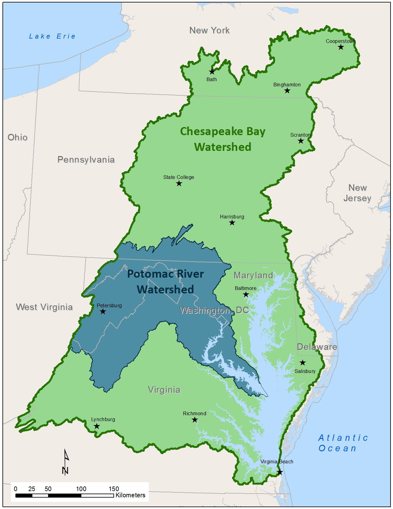

Potomac River Basin Atlas
Potomac River Basin Atlas
About ICPRB
Resources
Maps
Interstate Commission on the Potomac River Basin
Sub-Watersheds
Sub-watersheds of the Potomac River basin.

Use this map to search for specific areas within the Potomac River basin. Learn more about the basin, its people, its water, and its land on our
Potomac Basin Facts
page.